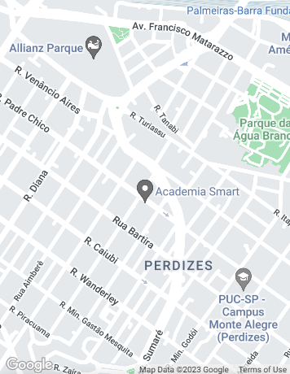

<ion-header>
  <ion-toolbar>
    <ion-title>Radar</ion-title>
    <ion-buttons slot="end">
      <ion-button color="danger" (click)="backHome()">
        <ion-icon name="close"></ion-icon>
      </ion-button>
    </ion-buttons>
  </ion-toolbar>
</ion-header>

<ion-content class="ion-padding" style="height: 100%;">
  <div class="form-content">
    
  </div>
</ion-content>

<ion-footer slot="end">
  <ion-button type="submit" expand="block" (click)="backHome()">
    Chamar catador mais próximo
  </ion-button>
</ion-footer>